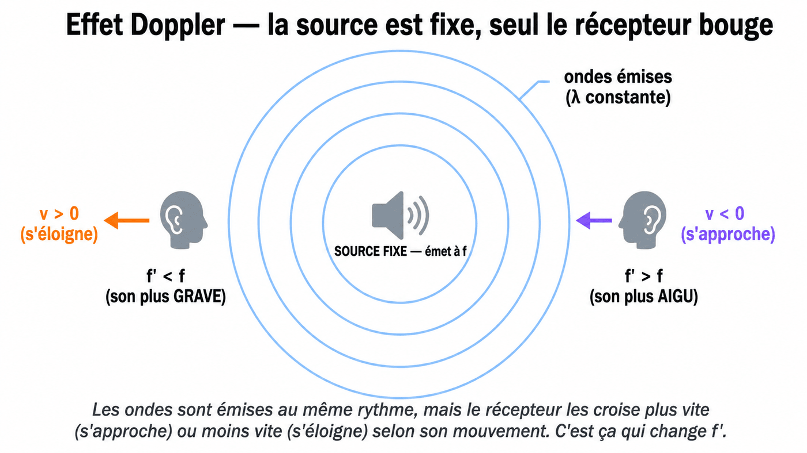

L'effet Doppler : l'ambulance et f' = f(1 − v/c)
La sirène, elle, n'a pas changé.
Ce qui change, c'est la fréquence perçue — et ça se calcule.
Le bloc qu'on vient de finir répondait à une seule question : « quelle est la force du son ? » — l'intensité W, puis sa conversion en décibels. On change de question. Ici, on ne demande plus combien c'est fort, mais à quelle fréquence ça arrive. Un acquis du chapitre reste vrai et va tout porter : la célérité c est une signature du milieu traversé, pas de la source sonore — dans l'air, le son voyage à ≈ 340 m/s, que la source bouge ou non. C'est justement parce que c ne bouge pas que le décalage de fréquence, lui, va pouvoir servir à mesurer une vitesse.
Tu connais l'effet : une ambulance arrive vers toi en hurlant, sa sirène a un son aigu ; puis dès qu'elle te dépasse et s'éloigne, le son devient plus grave. Pourtant, la sirène n'a pas changé. Ce qui a changé, c'est la fréquence perçue par toi (le récepteur). Quand la source se rapproche, les ondes successives arrivent plus vite que prévu, comprimées dans le temps → fréquence perçue plus élevée. Quand la source s'éloigne, les ondes s'étirent → fréquence perçue plus basse. C'est l'effet Doppler, décrit en 1842 par le physicien autrichien Christian Doppler.
La scène : la sirène est fixe, posée sur un poteau au bord de la route, elle bipe à la fréquence f. Les bips partent en cercles concentriques réguliers, tous à la même distance les uns des autres (= longueur d'onde λ constante). Toi, tu bouges au volant de ta voiture : ton oreille est le récepteur, à la vitesse v. Question : à quel rythme ton oreille va-t-elle croiser les bips successifs ? C'est ça, ta fréquence perçue f'.

- 1 Voiture à l'arrêt (v = 0). Tu es garé. Les bips arrivent à ton oreille au rythme normal → f' = f. Aucun changement.
- 2 Tu pars en t'éloignant de la sirène (v > 0). Tu roules dans le même sens que les ondes qui te courent après. Comme tu les « fuis », elles te rattrapent moins vite → moins de bips par seconde → f' < f (son plus grave). L'écart par rapport à f est proportionnel à v/c (la fraction de la vitesse du son que tu « rattrapes »).
- 3 Tu fonces vers la sirène (v < 0). Tu roules à contresens des ondes : elles viennent vers toi, et toi tu vas vers elles. Vous vous croisez plus vite → plus de bips par seconde → f' > f (son plus aigu).
f' = f × (1 − v/c)
f = fréquence émise par la source (Hz) · f' = fréquence perçue par le récepteur (Hz) · v = vitesse du récepteur, POSITIVE si s'éloigne, NÉGATIVE si s'approche · c = célérité du son dans le milieu (m/s).
💡 Exemple chiffré — tu passes devant une ambulance garée. Elle est stationnée devant les urgences, sirène allumée pour un test, à f = 1 000 Hz. Toi, tu roules sur la route qui longe l'hôpital à v = 30 m/s (= 108 km/h). Ta voiture = le récepteur mobile, la sirène = la source fixe, et c = 340 m/s. Donc v/c = 30/340 ≈ 0,09 : tu roules à 9 % de la vitesse du son.
🔁 Conversion m/s ↔ km/h (à mémoriser pour la P1, ça revient tout le temps) : m/s → km/h, on multiplie par 3,6 — 30 m/s × 3,6 = 108 km/h. km/h → m/s, on divise par 3,6 — 108 km/h ÷ 3,6 = 30 m/s. D'où vient ce 3,6 ? De 1 km/h = 1 000 m ÷ 3 600 s = 1/3,6 m/s.
- 1 Tu fonces vers l'ambulance (v < 0, tu vas à la rencontre des ondes) : f' = 1 000 × (1 − (−0,09)) = 1 000 × 1,09 = 1 090 Hz → son plus aigu de ~90 Hz.
- 2 Tu l'as dépassée et tu t'en éloignes (v > 0, tu fuis avec les ondes) : f' = 1 000 × 0,91 = 910 Hz → son plus grave de ~90 Hz.
- 3 L'écart entre l'aigu et le grave représente ~180 Hz sur 1 000 = 18 %. C'est très perceptible à l'oreille — d'où le « bzzziooouuuuw » caractéristique (et c'est exactement symétrique quand c'est la sirène qui passe devant toi).